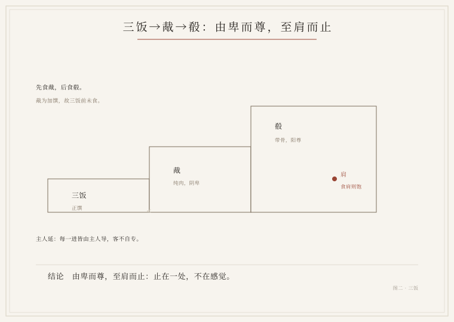

曲礼上 · 一·六十四 · 第 62 课
吃过三口饭，主人导客吃胾；胾吃完，再遍吃殽，吃到最后一块肩而饱。次序是先纯肉、后带骨。
说什么事：三饭，主人延客食胾，然后辩殽。
落在哪一层：仪。上节讲祭，此节讲食之次。
为何编在此位：祭毕乃食；食有次，次有节。
【经】三飯，主人延客食胾，然後辯殽。
【注】先食胾，後食殽。殽，尊也。凡食殽，辨於肩，食肩則飽也。
三饭 疏：「三饭谓三食也。礼食三飧而告饱，须劝，乃更食。」又引《公食大夫礼》「宾三饭以湆酱」，郑注「每饭歠湆以殽擩酱，食正馔也」。
主人延客食胾 疏：「三饭竟，而主人乃道客食胾也。」「所以至三飧后乃食胾者，《公食礼》亦以胾为加，故客三飧前未食之。」
然后辩殽 注「辩，匝也」。「然后」谓食胾竟后。
先食胾，后食殽 疏：「纯肉为阴，阴，卑也；带骨为阳，阳，尊也。尊故后食之也。」
凡食殽，辩于肩，食肩则饱 疏引《特牲》《少牢》：初食殽，次食脊，次食骼，后食肩。
吃过三口饭，主人导客人吃胾；胾吃完，再把殽遍吃一遍。
一节讲吃的次序：先正馔之饭，次加馔之胾，最后带骨之殽。次序由卑而尊，由易而难，由少而饱。吃到肩而止，是礼的节；节不是禁，是知止。
第一层 三饭而后胾 胾是加馔，不先于正馔。礼食之法：正者先，加者后。今日宴席冷盘、主菜、点心之序，亦是此意。
第二层 胾先殽后 纯肉为阴而卑，带骨为阳而尊，故先胾后殽。以阴阳解卑尊，是汉人之说；其所指出的「先易后难、先碎后整」，却是取食之实。
第三层 辩于肩 殽之遍食，有其次：殽、脊、骼、肩。肩在最后，食肩则饱。礼不曰「饱则止」，而曰「辩于肩」——止在一处，不在感觉。
第四层 主人延 每一进皆由主人导。客不自主加食，主不强迫客食。一席之上，吃的节奏由主人执，客守其节。
与今日何干 今日劝菜，多失其节：主人一味劝，客一味推，两不便。此节给的是另一路：主人导一次，客吃一次；导而不迫，从而不贪。
| 左 | 右 |
|---|---|
| 三饭 | 三食；礼食三飧而告饱，须劝乃更食 |
| 延客食胾 | 胾为加馔，主人导之 |
| 然后辩殽 | 辩，匝也；食胾竟乃遍殽 |
| 先胾后殽 | 纯肉阴卑，带骨阳尊 |
| 辩于肩 | 殽、脊、骼、肩，肩最后 |
| 食肩则饱 | 以肩为节，不以饱为节 |
画一案三进：最内一只小簋，簋中饭已略去三口（饭面留三处凹痕）；其次一只豆，豆中切肉片已少一半；最外一具俎，俎上带骨肉块尚整，其中一块肩骨形状明显。三器由内而外排列。不画人、不写文字。赭色只在簋沿与肩骨一端。
